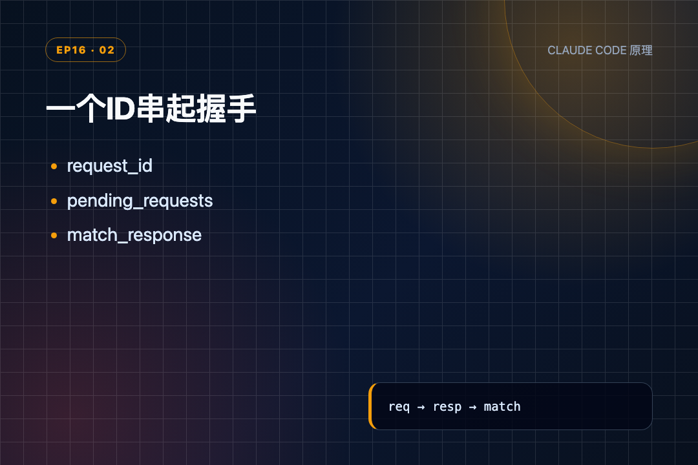
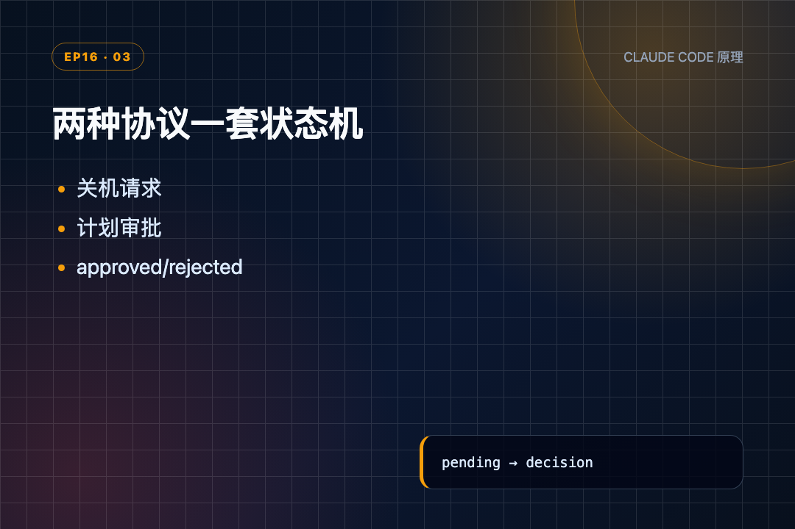
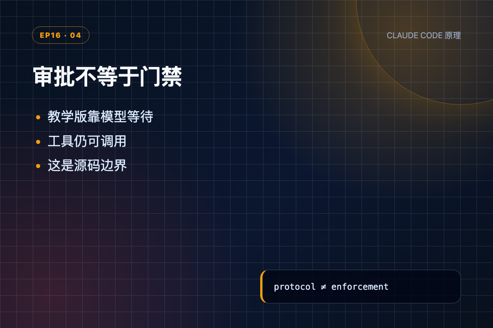
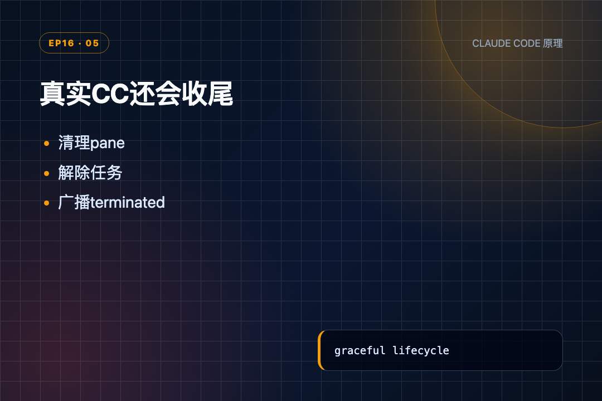

电脑卡死时直接拔电源，偶尔真能恢复；但谁也不会把它写进“正常关机流程”。读到 s16 的关机代码时，我想到的就是这件事：线程能被结束，不代表队友已经收尾。
上一节 s15 刚给每个 Agent 配好独立收件箱，Lead 能发消息，Alice 也能回消息。可邮箱只解决“消息送到了”，没回答“这条回复是在答哪一次请求”。
如果 Lead 连发两次审批、一次关机，三条回复又交错回来，只靠自然语言猜对应关系，很快就会乱。s16 因此没有换掉 MessageBus，而是在消息上加 request_id，再用一份状态记录追踪每次请求。
能互相发消息，只是团队通信；能把请求和回复准确配上，才开始有协作协议。
● ● ●
先看一个具体场景：Lead 同时发了两个请求——关机和审批计划。
没有协议时（s15 的做法）：
Lead 发出：
① "请关机"
② "看一下你的重构计划"
Alice 回复（顺序乱了）：
③ "好的，计划是先改认证模块"
④ "已退出"
Lead 收到 ③④，满头问号：
③ 是在回答 ① 还是 ② ？
④ 是真的退出了还是只是说"好"？
③ 误改成"已批准"了怎么办？
① ──→ ？？？ ←── ③
② ──→ ？？？ ←── ④
↑
谁答的谁？不知道。
核心问题：消息只有文字，没有编号，回复和请求配不上对。
加了协议后（s16 的做法）：
Lead 发出（带编号）： ① req_001 "请关机" ② req_002 "看一下你的重构计划" Alice 回复（带回同一个编号）： ③ req_002 "计划是先改认证模块" ④ req_001 "已退出" 配对结果： ① ──→ req_001 ──→ ④ ✓ 关机完成 ② ──→ req_002 ──→ ③ ✓ 计划已回复 再加上类型校验：关机回复不会误批计划 再加上状态校验：同一条请求不会被回复两次
s15 和 s16 的差别，可以压成这张表：
这里第一次出现的“协议”，说人话就是：双方先约定消息长什么样、回复必须带回哪个编号、收到回复后状态怎么改。它不是让模型“更懂礼貌”，而是外围 Python 程序把来回消息管起来。
能发消息不等于会协商
● ● ●
ProtocolState 给每次请求留档核心数据结构不复杂：
@dataclass class ProtocolState: # 一次请求—响应往返的状态记录 request_id: str # "shutdown" | "plan_approval" type: str sender: str target: str # pending | approved | rejected status: str # plan text or shutdown reason payload: str created_at: float = field(default_factory=time.time) # 内存字典：以请求编号为键，保存所有等待处理的请求 pending_requests: dict[str, ProtocolState] = {}
逐行看：
request_id 是本次往返的编号。请求带着它出去，响应必须原样带回来。type 区分关机和计划审批，避免关机回复误批一份计划。sender、target 记录谁发给谁，payload 保存计划文本或关机原因。status 初始是 pending，只允许走到 approved 或 rejected。pending_requests 是内存字典，Lead 根据编号找到正在等待的那条记录。这种“状态只能沿固定路线变化”的写法常被叫作状态机。这里不用把它想复杂：未处理就是 pending，同意就是 approved，拒绝就是 rejected；处理过的请求不能再处理第二次。
请求编号由这个函数生成：
def new_request_id() -> str: # 生成形如 req_000142 的六位编号，用于关联请求与回复 return f"req_{random.randint(0, 999999):06d}"
教学版用六位随机数，够演示关联关系，但没有检测碰撞。生产实现若真依赖这个字典，还需要保证 ID 不重复。

一个ID串起握手
● ● ●
Lead 调 request_shutdown 时，真正执行的是 run_request_shutdown()：
def run_request_shutdown(teammate: str) -> str: # 先生成请求编号 req_id = new_request_id() # 先落一条 pending 记录 pending_requests[req_id] = ProtocolState( request_id=req_id, type="shutdown", sender="lead", target=teammate, status="pending", payload="") # 再把请求写进队友邮箱 BUS.send("lead", teammate, "Please shut down gracefully.", "shutdown_request", {"request_id": req_id}) print(f" \033[35m[protocol] shutdown_request → {teammate} " f"({req_id})\033[0m") # 返回编号给 Lead，顺序不能反：先记状态再发消息 return f"Shutdown request sent to {teammate} (req: {req_id})"
这段的顺序不能反：
new_request_id() 先产生编号。pending_requests[req_id] 先落一条 pending 记录。BUS.send() 再把 shutdown_request 写进队友邮箱，metadata 携带同一个编号。为什么一定先记状态再发消息？ 因为队友线程可能很快读到邮箱并回复。如果先发后记，回复先回来时，Lead 查不到这个 ID，只能当成未知请求。
BUS.send() 沿用 s15 的文件邮箱，只是消息现在多了 type 和 metadata：
def send(self, from_agent: str, to_agent: str, content: str, msg_type: str = "message", metadata: dict = None): # 组装消息：type 和 metadata 现在携带协议信息 msg = {"from": from_agent, "to": to_agent, "content": content, "type": msg_type, "ts": time.time(), "metadata": metadata or {}} # 收件人的邮箱文件 inbox = MAILBOX_DIR / f"{to_agent}.jsonl" with open(inbox, "a") as f: f.write(json.dumps(msg) + "\n")
文件里不再只有一句“请关机”，而是一条能被程序识别的 JSON：消息类型是 shutdown_request，编号放在 metadata.request_id。
● ● ●
s16 还有一个很重要的前提：队友完成当前工作后不会立刻消失，而是进入 idle 等收件箱。idle 就是“暂时没活，但线程还在”，不是第一次出现在 s17；s16 已经有了。
队友读到关机请求后走这段：
# 识别关机请求，不当普通聊天 if msg_type == "shutdown_request": # 用同一个 ID 回复 Lead BUS.send(name, "lead", "Shutting down gracefully.", "shutdown_response", {"request_id": req_id, "approve": True}) print(f" \033[35m[protocol] {name} approved shutdown " f"({req_id})\033[0m") # stop the loop return True
四行正好对应四个动作：
shutdown_request，不把它当普通聊天。req_id 给 Lead 回 shutdown_response。approve=True 表示同意关机。return True 告诉外层循环停止，随后队友发送最终 summary、清理 active_teammates 并结束线程。优雅关机不是“多发一句礼貌消息”，而是先确认、再让执行循环退出。 如果没有最后的 return True，协议状态会显示 approved，但线程仍继续跑；那只是表态，不是关机。
● ● ●
s15 的 read_inbox() 是破坏性读取：读完就删除邮箱文件。因此 s16 专门做了统一入口 consume_lead_inbox()：
def consume_lead_inbox(route_protocol: bool = True) -> list[dict]: # 一次取走 Lead 的全部消息 msgs = BUS.read_inbox("lead") if not msgs: # 没消息就直接返回，避免后面空转 return [] if route_protocol: for msg in msgs: meta = msg.get("metadata", {}) req_id = meta.get("request_id", "") msg_type = msg.get("type", "") # 只处理协议响应 if req_id and msg_type.endswith("_response"): approve = meta.get("approve", False) # 路由到状态更新函数 match_response(msg_type, req_id, approve) # 原消息仍返回，供主循环追加到 history return msgs
逐行拆：
BUS.read_inbox("lead") 一次取走 Lead 的全部消息。request_id，并且类型以 _response 结尾，才进入协议匹配。approve 没写时默认 False，不会凭空批准。history，让 Lead 下一轮看到队友说了什么。统一入口解决的是“消息被谁先读走”。如果 check_inbox 和主循环各自直接读文件，前者删掉邮箱后，后者就再也没有机会更新 pending_requests。
真正改状态的是 match_response()：
def match_response(response_type: str, request_id: str, approve: bool): # 按编号找状态记录 state = pending_requests.get(request_id) if not state: print(f" \033[31m[protocol] unknown request_id: {request_id}\033[0m") return # 检查1：类型必须匹配 if state.type == "shutdown" and response_type != "shutdown_response": print(f" \033[31m[protocol] type mismatch: expected shutdown_response, " f"got {response_type}\033[0m") return # 检查1：类型必须匹配 if state.type == "plan_approval" and response_type != "plan_approval_response": print(f" \033[31m[protocol] type mismatch: expected plan_approval_response, " f"got {response_type}\033[0m") return # 检查2：重复回复不能再改 if state.status != "pending": print(f" \033[33m[protocol] {request_id} already {state.status}, " f"ignoring duplicate\033[0m") return # 三道检查通过才落锤 state.status = "approved" if approve else "rejected"
它连过三道检查：
unknown request_id。通过之后才更新状态。不是“收到任何回复就算完成”，而是 ID、类型、当前状态都对得上，才允许落锤。

两种协议一套状态机
● ● ●
关机是 Lead 发起、队友回复；计划审批方向相反：队友提交计划，Lead 批准或拒绝。
def _teammate_submit_plan(from_name: str, plan: str) -> str: # 生成计划审批编号 req_id = new_request_id() # 写 pending 记录 pending_requests[req_id] = ProtocolState( request_id=req_id, type="plan_approval", sender=from_name, target="lead", status="pending", payload=plan) # 把计划发给 Lead 等审批 BUS.send(from_name, "lead", plan, "plan_approval_request", {"request_id": req_id}) return f"Plan submitted ({req_id}). Waiting for approval..."
Lead 的 run_review_plan() 找到同一条状态，写成 approved/rejected，再向队友发送 plan_approval_response。队友收到后，把 [Plan approved] 或 [Plan rejected] 追加到自己的 messages，下一轮模型就能看到。
把新消息追加到 messages，让模型下一轮看到，有时会被说成“事件注入”。其实动作就这一句，没有神秘成分。
关机与审批共用的是：
创建 request_id → 写 pending_requests[id] = pending → 请求消息带 id 出去 → 响应消息带同一个 id 回来 → 校验 id + 类型 + 当前状态 → approved / rejected
变化的只是方向、消息类型和 payload。共用一套关联方式，比为每种协作动作另写一套临时逻辑更不容易乱。
● ● ●
前面的函数不是散装工具。一次关机从 Lead 到 Alice，再回到 Lead，完整顺序是：
Lead 调 request_shutdown("alice")
↓
run_request_shutdown()
① 生成 req_000142
② pending_requests[req_000142] = pending
③ MessageBus 写 alice.jsonl
↓
Alice 已完成当前 LLM turn，正在 idle 轮询
④ read_inbox("alice")
⑤ 识别 shutdown_request
⑥ 回写 lead.jsonl，沿用 req_000142
⑦ 返回 True，退出队友循环
↓
Lead 主循环 / check_inbox
⑧ consume_lead_inbox()
⑨ match_response() 校验 ID、类型、状态
⑩ pending → approved
⑪ 原消息追加到 Lead history
其中模型只决定“何时调用 request_shutdown”。编号生成、文件写入、状态更新、重复响应拦截，全部由模型外面的 Python 代码确定执行。
这也是我读 s16 时最需要分清的地方：提示词可以要求队友礼貌关机，但只有 handler 真正让循环停止，关机才是代码事实。
● ● ●
光看代码没感觉，跑一下。
Lead 要求 Alice 优雅关机：
s16 >> Request alice to shut down gracefully [bus] lead → alice: (shutdown_request) Please shut down gracefully. [protocol] shutdown_request → alice (req_000142)
第一行是探针输入。第二行 MessageBus.send() 把关机请求写进 Alice 的邮箱。第三行打印协议编号——req_000142 是这次握手的唯一标识，请求和回复必须带同一个 ID。此时状态是 pending，意思是"已发出，还没回复"。
Alice 收到后回复同意：
[bus] alice → lead: (shutdown_response) Shutting down gracefully. [protocol] shutdown ✓ (req_000142: approved)
注意同一个 req_000142 出现在回复里。match_response() 检查三件事：ID 存在、类型匹配、状态还是 pending——全通过后，状态从 pending 变成 approved。
如果 Lead 不小心又发了一次相同回复？
[protocol] req_000142 already approved, ignoring duplicate
重复回复直接被忽略，不会把 approved 再改一遍。这就是状态机的好处：不是每条消息都能改变状态，只有合法的、处于 pending 状态的请求才能推进。
一句话总结：关机不是直接杀线程，而是 Lead 发请求、Alice 回复、双方用同一个 ID 追踪整个过程。计划审批也是同一套逻辑，只是消息类型不同。
● ● ●
读 _teammate_submit_plan() 的注释，会看到作者主动写明了边界：
# This is a protocol-level request, not a code-level gate. # After submitting, the teammate's thread continues running — it can # still call bash/write/etc.
教学版只实现了“提交计划—收到审批”的消息流程，没有在队友工具分发前检查计划是否 approved。
也就是说，Bob 调完 submit_plan 后，模型如果不听“Waiting for approval”，下一轮仍能调用 bash 或 write_file。状态记录存在，不代表执行权限已经接上这个状态。
真要做成硬门禁，需要在 sub_handlers 执行工具前检查当前 plan request：未批准时只允许收件箱、消息等安全动作，高风险工具直接返回拒绝结果。

审批不等于门禁
还有两个教学版限制也要记住：pending_requests 只在内存里，进程重启就丢；MessageBus.send/read_inbox 没加文件锁，多线程同时读写时仍有竞争。这些都不影响理解请求—响应骨架，但不能直接当生产实现。
● ● ●
README 给出的真实源码入口很具体：teammateMailbox.ts、SendMessageTool.ts、useInboxPoller.ts、ExitPlanModeV2Tool.ts。
真实 CC 的 shutdown 是三段式生命周期：Lead 发请求，队友批准或拒绝，最终系统再发 teammate_terminated。最后一条很重要，它告诉所有相关方“人已经真的退出”，而不只是“口头同意退出”。
计划审批也不是简单复制教学版。真实请求由 ExitPlanModeV2Tool 产生；审批可以带 feedback，还可以设置 permissionMode，例如批准方案但继续限制在 plan mode。审批结果不仅是一句文本，还会改变后续允许执行的动作。
README 还指出一个容易踩的兼容细节：permission 消息使用 request_id，shutdown 和 plan approval 使用 requestId。真实实现必须靠 schema 和各自的解析路径处理，不能假设所有消息字段完全统一。

真实CC还会收尾
● ● ●
s16 没有给模型换一个更聪明的脑子，只给团队通信补了四条硬规则：
我读完最深的印象是：协作可靠性不靠“大家理解彼此”，而靠每一次往返都能被程序核对。 教学版已经把这个骨架讲清楚，同时也坦白了审批门禁、持久化和文件锁尚未补齐。
下一节 s17 会接着处理另一个瓶颈：协议让 Lead 能协调队友，但如果任务板上有十个任务，难道还要 Lead 一个个派？队友已经会 idle 等消息，接下来要新增的是空闲时扫描任务板、检查依赖、自动认领，以及等太久后的超时退出。
源码地址：https://github.com/shareAI-lab/learn-claude-code